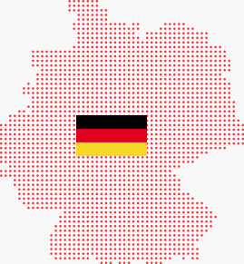

        
<section class="dece-ojl">
    <div class="container">
        <div class="row">
            <div class="col-md-6">
                <h2>De ce <br><span class="text-red">Openjob</span>line</h2>
                <blockquote>
                    Știm că momentan acest sector este foarte bogat în oferte interesante. Este de datoria ta  şi în avantajul tău să iei o decizie informată, bazându-te și pe experienţa altora. <br><br>OpenJobLine îţi oferă avantaje unice şi diverse bonusuri.
                </blockquote>
            </div>
            <div class="col-md-6">
                <figure class="map">
                    
                </figure>
            </div>
        </div>
        <div class="row">
            <div class="col-12 col-md-6">
                <dl>
                    <dt></dt><dd>Plecarea din țară cu toate actele necesare angajării ca AMG în Germania, inclusiv certificat de limbă nivel B2 recunoscut</dd>
                    <dt></dt><dd>Burse de studiu încă din anul I de formare, nu doar anul III. Investim în tine 3 ani de zile.</dd>
                    <dt></dt><dd>Modulul de limbă germană A1, în limita a 100 de ore, nu implică nicio obligaţie. Nu eşti constrâns să semnezi un contract, ai posibilitatea să vezi dacă poţi face faţă acestei limbi mai întâi.</dd>
                </dl>
            </div>
            <div class="col-12 col-md-6">
                <dl>
                    <dt></dt><dd>Durata cursului exclusiv LA CLASĂ este mai îndelungată și numărul orelor de curs este mai mare pentru a-ți oferi pregătirea necesară promovării examenului de limbă.</dd>
                    <dt></dt><dd>Evaluări regulate cu evaluatori TELC, astfel că ştii mereu cu exactitate unde te afli din punct de vedere al cunoştinţelor de limbă şi nu ai surprize la sfârşitul cursului.</dd>
                    <dt></dt><dd>Posibilitatea de aschimba locul de muncă dacă nu te poţi adapta.</dd>
                </dl>
            </div>
        </div>
    </div>
</section>
